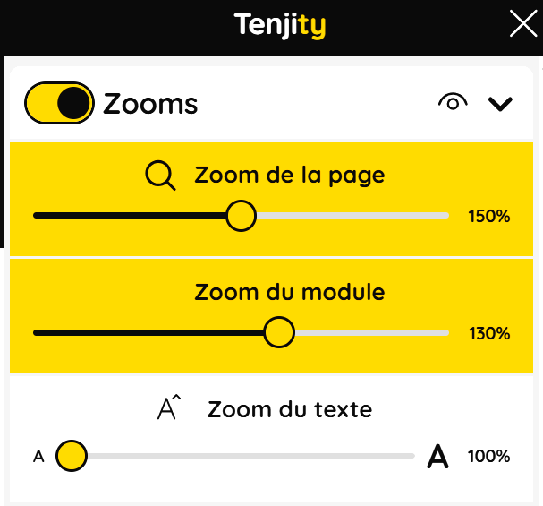

RéalisationsAlternance
Module d'accessibilitéTenjity
Ajout de fonctionnalités, refactorisation et intégration d'un module d'accessibilité web embarqué sur des sites tiers, développé en Vue.js 3.
Contexte
Un module existant que j'ai fait évoluer.
Tenjity est un module d'accessibilité web : un widget JavaScript qui s'injecte sur n'importe quel site et propose à l'internaute un zoom (page, module, texte), une loupe, un curseur agrandi, une règle de lecture, des filtres couleur, un mode sombre, une police pour dyslexiques, ainsi que des profils d'accessibilité regroupant plusieurs réglages.
Je n'ai pas créé ce module : je suis intervenue dessus pour y ajouter de nouvelles fonctionnalités.
Nouvelles fonctionnalités
Ce que j'ai ajouté au module.
- Sélection multi-profils : activer plusieurs profils d'accessibilité en même temps, avec conservation cohérente des réglages de chacun.
- Zoom du module et zoom du texte : ajout de ces deux niveaux de zoom en plus du zoom page, réorganisation du zoom page existant, et passage de tous les contrôles de zoom en curseurs (sliders).
- Regroupement des trois zooms dans un composant
AccessibilityZoomdédié, rattaché au profil « Déficiences visuelles ».
Refactorisation
Réorganiser le code.
Suite à l'ajout de nombreuses nouvelles fonctionnalités, tout vivait dans App.vue.
- Découpage de
App.vue(« god component ») : environ 1 400 lignes retirées du fichier, logique répartie par domaine dans une dizaine de composables (useCursor,useMagnifier,useProfileSystem,useModuleUI,useScreenRuler,useScreenReader,useTranslation,useContentFilter,useDyslexicFont…), passage en Composition API. - Extraction de l'état des zooms dans un composable
useZoom.js:AccessibilityZoom.vuedevient purement présentationnel. Suppression des accès défensifs à une référence de composant potentiellement nulle et d'un mécanisme de sauvegarde / restauration d'état devenu inutile.
Correctifs
Bugs corrigés.
- Robustesse au
localStoragecorrompu du site hôte (try/catch au chargement des profils). - Persistance des filtres couleur, du mode sombre et de l'état de zoom d'une page à l'autre (sauvegarde en
localStorageet restauration au montage). - Zoom perdu lors de la réactivation d'un profil, ou de la combinaison zoom + curseur.
- Loupe : état conservé au changement de profil, compensation du zoom CSS manquant, clavier virtuel tronqué.
- Police pour dyslexiques non appliquée au conteneur du module lui-même.
- Suppression de code mort (ancien système de « zoom visuel »).
Stack
Outils utilisés.
Vue.js 3 (Composition API)JavaScriptSCSSViteNuxt 3Git / GitHub
